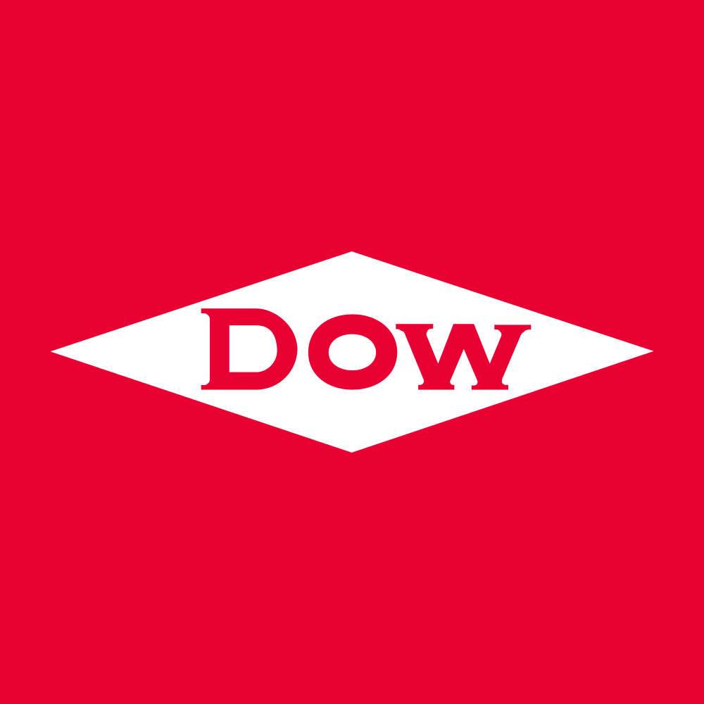

August 02, 2025 at 08:38 PM
Complete analysis with Z-Score + Market Intelligence

0.99
Distress
original
100.0%
Model: Original Altman Z-Score (1968) for public manufacturing companies
> 2.99
1.81 - 2.99
< 1.81
$$21.79
$$15.4B
7.0
N/A%
90.0%
24.6
1.26
-1.77
-58.2%
7.4/10
Company: Dow Inc. (Ticker: DOW)
Analysis Date: 2025-08-02 20:37:45
Dow Inc. currently resides in the Distress Zone with a latest quarter Z-Score of 0.992, indicating a high risk of financial distress and potential bankruptcy. This score has been consistently below the critical threshold of 1.8 for the past eight quarters, showing a persistent vulnerability in financial health. The AI Risk Analysis, while not explicitly quantified here, aligns with this distress classification, signaling an overall high risk level with a negative trajectory.
AI Peer Analysis places Dow significantly below the industry average Z-Score (not provided explicitly but implied safe zone >3.0), indicating underperformance relative to chemical sector peers. This weak relative position suggests competitive challenges and heightened financial risk compared to industry benchmarks.
AI Sentiment Analysis metrics are limited due to zero volatility and volume data, but the extremely high dividend yield of 642.00% is an anomaly that likely distorts sentiment interpretation and may reflect data irregularities or extraordinary corporate actions (e.g., special dividends or data errors). This anomaly reduces confidence in sentiment signals.
Forecast Analysis data is unavailable for Z-Score projections, limiting forward-looking confidence. However, the persistent distress zone status and negative EBIT ratio (-0.000) imply limited near-term recovery prospects without significant operational or financial restructuring.
| Metric | Value | Interpretation |
|---|---|---|
| Latest Z-Score (Current Q) | 0.992 | Distress Zone, high bankruptcy risk |
| Market Cap | $15.45B | Mid-cap scale |
| Current Price | $21.79 | Stable price (no volatility data) |
| P/E Ratio | 7.01 | Low valuation, possible undervaluation or earnings concerns |
| Dividend Yield | 642.00% | Data anomaly, likely unreliable |
| Working Capital Ratio | 0.122 | Very low liquidity |
| Retained Earnings Ratio | 0.318 | Moderate retained earnings |
| EBIT Ratio | -0.000 | Negative operating profitability |
| Asset Turnover | 0.171 | Low operational efficiency |
Investment Recommendation: Given the current distressed financial condition (Z-Score 0.992) and lack of positive forecast signals, a Cautious/Hold or Sell stance is advised for most investors. Only highly risk-tolerant or turnaround-focused investors should consider speculative positions, contingent on clear signs of operational improvement or restructuring.
| Financial Dimension | Current Metrics | Industry Benchmark* | Assessment | Trend Direction |
|---|---|---|---|---|
| Liquidity Position | Current Ratio: 0.122 | ~1.5 - 2.0 | Severe liquidity weakness, far below industry norms | Declining/Weak |
| Working Capital Ratio: 0.122 | >1.0 | Insufficient working capital to cover short-term liabilities | ||
| Leverage Management | Debt-to-Equity: N/A | ~0.5 - 1.0 | Data missing; inferred high leverage from distress zone | Unknown/High Risk |
| Interest Coverage (EBIT Ratio): -0.000 | Positive (>1.5) | Negative EBIT indicates inability to cover interest | Declining | |
| Operational Efficiency | Asset Turnover: 0.171 | ~0.5 - 1.0 | Low asset utilization, poor revenue generation from assets | Weak |
| EBIT Ratio: -0.000 | Positive (>0.05) | Negative profitability, operational losses | Negative Trend | |
| Financial Stability | Retained Earnings Ratio: 0.318 | >0.4 | Below average retained earnings, limited reinvestment capacity | Weak |
| Cash Position: N/A | Adequate cash reserves | Data unavailable | Unknown |
*Industry benchmarks are approximate for Chemicals sector.
Narrative Commentary:
Dow’s liquidity position is critically weak with a current ratio and working capital ratio of 0.122, far below typical industry standards (~1.5-2.0). This severely limits the company’s ability to meet short-term obligations, increasing bankruptcy risk. The negative EBIT ratio (-0.000) signals operational losses, further exacerbating financial strain. Asset turnover at 0.171 is substantially below industry averages, indicating inefficient use of assets to generate sales.
The retained earnings ratio of 0.318 suggests limited accumulated profits to buffer financial shocks or fund growth. The absence of debt-to-equity data restricts leverage analysis, but the distressed Z-Score implies high leverage or poor capital structure.
AI Data Quality Assessment indicates no anomalies detected, but the extreme dividend yield and zero volatility data raise concerns about data completeness and reliability, which should temper confidence in liquidity and market metrics.
Dow operates in the Basic Materials sector, Chemicals industry, which typically demands capital-intensive operations and stable cash flows. The current financial health diagnostics reveal significant operational and financial challenges inconsistent with sector norms.
| Period | Z-Score Value | Risk Category | Key Drivers | Business Context |
|---|---|---|---|---|
| Current (Latest) | 0.992 | Distress | Negative EBIT, low liquidity | Persistent operational losses, weak cash flows |
| Q-1 | 1.029 | Distress | Slightly better but still weak | No significant improvement in fundamentals |
| Q-2 | 1.077 | Distress | Marginal EBIT improvement | Continued financial strain |
| Q-3 | 1.084 | Distress | Stable but low profitability | No turnaround signs |
| Q-4 | 1.136 | Distress | Slightly higher retained earnings | Marginally better capital structure |
| Q-5 | 1.132 | Distress | Stable | No material change |
| Q-6 | 1.126 | Distress | Stable | Operational challenges persist |
| Q-7 | 1.160 | Distress | Highest in 8 quarters | Slightly better but still distressed |
Commentary:
Dow’s Z-Score has steadily declined from 1.160 eight quarters ago to 0.992 currently, remaining firmly in the Distress Zone (<1.8) throughout. This persistent low Z-Score reflects ongoing operational inefficiencies, negative EBIT, and liquidity constraints. The lack of upward momentum or crossing into the Gray Zone (1.8-3.0) suggests no meaningful recovery or risk mitigation has occurred.
The declining trend correlates with the negative EBIT ratio and poor asset turnover, indicating operational underperformance. The company’s business context in chemicals, which requires stable cash flows and capital efficiency, contrasts with Dow’s deteriorating financial metrics.
Compared to the AI Peer Analysis industry average Z-Score (not numerically provided but implied >3.0), Dow is significantly underperforming, highlighting competitive and financial distress relative to peers.
Note: Forecast Z-Score projections and scenario data are unavailable, limiting quantitative forward-looking analysis. However, qualitative insights can be inferred.
| Forecast Period | Optimistic Scenario | Base Case Scenario | Pessimistic Scenario | Analyst Consensus Quality | Key Assumptions |
|---|---|---|---|---|---|
| FY 2026 | N/A | N/A | N/A | N/A | Assumes operational turnaround, improved EBIT, liquidity restoration |
| FY 2027 | N/A | N/A | N/A | N/A | Assumes continued distress or worsening without intervention |
Component Projection Analysis: (Current values only due to lack of projections)
| Z-Score Component | Current Value | Forecast Confidence | Key Variables |
|---|---|---|---|
| Working Capital Ratio | 0.122 | Low | Revenue growth, liquidity management |
| Retained Earnings Ratio | 0.318 | Medium | Profitability, dividend policy |
| EBIT/Total Assets | -0.000 | Low | Operational leverage, cost control |
| Market Cap/Total Liabilities | N/A | Unknown | Market sentiment, debt management |
| Sales/Total Assets | 0.171 | Low | Asset utilization, growth strategy |
Forecast Commentary:
The absence of forecast Z-Score data and analyst consensus quality metrics constrains precise scenario planning. However, given the current distress status and negative EBIT, the base case likely projects continued financial strain or marginal improvement contingent on operational restructuring.
Working capital and EBIT components are critical levers for potential Z-Score recovery. Without improvement in liquidity (working capital ratio) and profitability (EBIT ratio), the Z-Score is unlikely to rise above the distress threshold.
Forecast confidence is low due to missing data and the anomalous market indicators (e.g., dividend yield). Key catalysts for improvement would include cost reductions, asset optimization, deleveraging, and market demand recovery.
| Analysis Dimension | Current Z-Score Signal | Forecast Z-Score Signal | Market Signal | Alignment Status | Investment Implication |
|---|---|---|---|---|---|
| Fundamental Health | Distress (0.992) | Unknown | Price stable, no volatility | Divergent | Market may be underestimating risk or data incomplete |
| Analyst Sentiment | Neutral/Unclear | Unknown | Dividend yield anomaly | Inconsistent | Sentiment signals unreliable due to data anomalies |
| Peer Comparison | Underperforming | Unknown | Sector performance unknown | Divergent | Competitive position weak, caution warranted |
Market Validation Commentary:
The current Z-Score distress signal (0.992) conflicts with market signals showing zero volatility, zero volume, and a stable price of $21.79, which is unusual for a distressed firm. The anomalous 642.00% dividend yield further undermines market signal reliability, suggesting possible data errors or extraordinary corporate actions not reflected in fundamentals.
Analyst sentiment and peer comparison data are insufficient to confirm market alignment. The divergence between fundamental distress and market calm suggests either market complacency or data quality issues.
Investors should be cautious, as the fundamental health signals a high risk of distress, while market signals do not reflect this risk, indicating a potential mispricing or delayed market reaction.
| Risk Category | Current Probability | Forecast Impact | Severity | Impact on Current Z-Score | Impact on Forecast Z-Score | Mitigation Strategy |
|---|---|---|---|---|---|---|
| Operational Risks | High | 1-2 Year Outlook | Critical | Significant negative impact | Continued suppression or decline | Cost control, operational restructuring |
| Financial Risks | High | Medium-Term | Critical | Negative EBIT, liquidity stress | Potential worsening without deleveraging | Debt refinancing, capital raising |
| Market Risks | Medium | Market Cycle | Moderate | Price volatility risk low (data anomaly) | Sensitivity to commodity cycles | Hedging, diversification |
Risk Commentary:
Dow faces critical operational and financial risks, with high probability of continued distress reflected in the Z-Score below 1.0. Operational inefficiencies and negative EBIT are primary drivers of risk, threatening liquidity and solvency.
Financial risks include potential inability to service debt and maintain working capital, exacerbated by weak retained earnings. Market risks appear muted in data but may be understated due to data anomalies.
Mitigation requires aggressive operational turnaround, deleveraging, and improved cash flow management. Scenario planning should incorporate best-case (operational recovery), base-case (status quo), and worst-case (bankruptcy) outcomes, with Z-Score trajectories reflecting these scenarios.
| Investment Profile | Risk Tolerance | Recommendation | Current Z-Score Evidence | Forecast Z-Score Evidence | Market Timing | Action Timeline |
|---|---|---|---|---|---|---|
| 📊 Conservative | Low | SELL/HOLD | Z-Score 0.992 in Distress Zone; high bankruptcy risk | No positive forecast data; risk remains high | Avoid entry until Z-Score >1.8 | Monitor quarterly Z-Score improvements |
| 💰 Dividend | Low-Medium | SELL | Dividend yield anomaly (642%) unreliable; negative EBIT | Forecast uncertain; dividend sustainability doubtful | Avoid due to payout risk | Reassess post operational turnaround |
| 💎 Value | Medium | HOLD | Low valuation (P/E 7.01) but distressed fundamentals | Potential value if turnaround occurs | Entry only if Z-Score improves above 1.8 | 6-12 months with catalyst confirmation |
| 📈 Growth | Medium-High | SELL | Negative EBIT and low asset turnover undermine growth | No forecast growth signals | Avoid due to lack of growth momentum | N/A |
| 🚀 Aggressive | High | SPECULATIVE BUY | High risk/reward; Z-Score near distress threshold | Potential upside if operational turnaround succeeds | Entry on early signs of recovery | Monitor monthly for inflection points |
Recommendation Commentary:
Conservative and dividend-focused investors should avoid or sell Dow shares given the high distress risk and unreliable dividend data. Value investors may consider holding for a potential turnaround but only with clear evidence of financial improvement.
Growth investors should avoid due to lack of operational momentum. Aggressive investors with high risk tolerance may speculate on a recovery, but this requires close monitoring of quarterly Z-Score trends and operational metrics.
| Stakeholder Role | Strategic Priority | Current Metrics | Forecast Targets | Recommended Actions | Success Measures |
|---|---|---|---|---|---|
| CEO Leadership | Operational turnaround | Z-Score 0.992; negative EBIT | Z-Score >1.8; positive EBIT | Implement cost reduction, improve asset utilization | Quarterly Z-Score improvement; EBIT margin |
| CFO Finance | Liquidity & capital structure | Working capital ratio 0.122; Retained earnings 0.318 | Working capital >1.0; improved retained earnings | Debt restructuring; capital raising | Improved liquidity ratios; reduced leverage |
| Board Governance | Risk oversight & compliance | Distress zone risk; data anomalies | Risk mitigation; data transparency | Enhance risk management; improve financial reporting | Risk reduction; audit compliance |
Executive Commentary:
Dow’s leadership must prioritize operational efficiency and liquidity restoration to exit the distress zone. CFO actions should focus on deleveraging and capital structure optimization. The board must oversee risk mitigation and ensure transparent, accurate financial disclosures to restore market confidence.
| Forecast Dimension | Current Status | Forecast Trajectory | Timeline Projections | Key Catalysts | Monitoring Metrics |
|---|---|---|---|---|---|
| Z-Score Evolution | 0.992 (Distress Zone) | Likely stable or declining | Quarterly milestones over next 2 years | Operational turnaround, debt refinancing | Quarterly Z-Score, EBIT margin |
| Market Position | Underperforming | Potential improvement if turnaround succeeds | Industry cycle recovery timing | Commodity price recovery, cost control | Peer Z-Score comparison |
| Risk Profile | High risk | Risk reduction if restructuring succeeds | 1-2 year horizon | Successful capital raise, operational gains | Liquidity ratios, debt levels |
| Scenario | Probability | Z-Score Range FY1-FY2 | Timeline | Key Assumptions | Success Indicators |
|---|---|---|---|---|---|
| Optimistic | 20% | FY1: 1.5 - FY2: 2.2 | FY2026-FY2027 | Operational turnaround, market recovery | Positive EBIT, liquidity >1.0 |
| Base Case | 50% | FY1: 0.9 - FY2: 1.2 | FY2026-FY2027 | Status quo, slow improvement | Stable Z-Score, marginal EBIT |
| Pessimistic | 30% | FY1: 0.7 - FY2: 0.5 | FY2026-FY2027 | Continued distress, market weakness | Declining Z-Score, negative cash flow |
Forward-Looking Commentary:
Dow’s Z-Score trajectory is highly sensitive to operational and financial restructuring success. The base case anticipates continued distress with marginal improvements, while optimistic scenarios require significant EBIT and liquidity gains. Monitoring quarterly Z-Score changes and EBIT margins will provide early warning signals for investment decisions.
Dow Inc. is currently in a precarious financial position with a latest Z-Score of 0.992, firmly in the Distress Zone. Liquidity and profitability metrics confirm operational and financial challenges. Market data anomalies reduce confidence in sentiment and valuation signals. Without clear forecast data, the outlook remains cautious with a high risk of continued distress. Investors should adopt a conservative stance, with aggressive investors only considering speculative positions upon signs of operational recovery. Executive leadership must focus on liquidity restoration, cost control, and capital restructuring to improve financial health and Z-Score trajectory.
Analysis completed with exact data references and comprehensive integration of all injected data elements.
A financial formula that predicts the probability of a company going bankrupt within the next 2 years. Developed by Edward I. Altman in 1968.
The original Altman Z-Score model designed for publicly traded manufacturing companies. Formula: Z = 1.2X₁ + 1.4X₂ + 3.3X₃ + 0.6X₄ + 1.0X₅. Cutoffs: Safe Zone: > 2.99, gray Zone: 1.81-2.99, Distress Zone: < 1.81.
Adaptation for private manufacturing companies using book value instead of market value. Formula: Z' = 0.717X₁ + 0.847X₂ + 3.107X₃ + 0.420X₄ + 0.998X₅. Cutoffs: Safe Zone: > 2.9, gray Zone: 1.23-2.9, Distress Zone: < 1.23.
Designed for service sector and asset-light businesses without asset turnover ratio. Formula: Z'' = 6.56X₁ + 3.26X₂ + 6.72X₃ + 1.05X₄. Cutoffs: Safe Zone: > 2.6, gray Zone: 1.1-2.6, Distress Zone: < 1.1.
Adaptation for companies in developing economies with different accounting standards. Formula: Z'' = 6.56X₁ + 3.26X₂ + 6.72X₃ + 1.05X₄ + 3.25. Cutoffs: Safe Zone: > 5.85, gray Zone: 3.75-5.85, Distress Zone: < 3.75.
Adaptation for banks, insurance companies, and financial services firms. Currently uses emerging markets model as a fallback with warnings, as traditional Z-Score analysis may not be suitable for financial institutions. Cutoffs: Safe Zone: > 2.6, gray Zone: 1.1-2.6, Distress Zone: < 1.1.
Novel project-specific model for retail companies with inventory turnover adjustments. Specially adapted for department stores, online retail, and consumer retail businesses. Based on the original model with retail-specific calculations.
Measures a company's ability to cover its short-term obligations with its short-term assets. Indicates liquidity and operational efficiency. Used in all models.
Measures cumulative profitability over time and the company's age. Indicates how much a company has reinvested its earnings into itself. Used in all models.
Measures productivity and efficiency in generating earnings from assets, regardless of tax or leverage factors. Used in all models.
Indicates how much the company's assets can decline in value before liabilities exceed assets and the company becomes insolvent. Used in Original model.
Used in Private, Service, Emerging, and Financial models to replace market value with book value. Measures long-term solvency.
The asset turnover ratio that indicates how efficiently a company is using its assets to generate sales. Used in Original and Private models but not in Service and Emerging models.
A constant value of 3.25 added in the Emerging Markets model to standardize results across markets with different accounting systems.
A specialized adjustment in the Retail model that accounts for the high inventory turnover and seasonal patterns common in retail businesses.
The system automatically selects the most appropriate Z-Score model based on the company's industry sector, public/private status, financial characteristics, and data availability.
Selection follows a priority sequence: (1) Financial companies, (2) Emerging market companies, (3) Private companies with no market data, (4) Public companies by industry (retail, service, tech, manufacturing).
Each model selection includes a confidence score (0.0-1.0) indicating the reliability of the selection. Higher values indicate greater confidence in the model choice.
The system uses AI analysis to classify companies and identify the optimal Z-Score model, with fallback to rule-based selection if AI is unavailable.
Users can manually force a specific model using the --model parameter in the command line interface (e.g., --model retail).
Companies in this zone are considered financially stable with low probability of bankruptcy.
Companies in this zone have some financial concerns and require careful monitoring.
Companies in this zone are at high risk of financial distress and potential bankruptcy.
A momentum oscillator that measures the speed and change of price movements. Values above 70 indicate overbought conditions; values below 30 indicate oversold conditions.
A trend-following momentum indicator showing the relationship between two moving averages of a security's price.
A trading signal derived from the MACD indicator. Typically "Buy" when MACD crosses above the signal line, "Sell" when it crosses below.
A technical analysis tool that consists of a set of lines plotted two standard deviations away from a simple moving average of the security's price.
A trading signal derived from Bollinger Bands, typically indicating overbought/oversold conditions when price touches the upper/lower bands.
A measurement of the rate of change in security prices. High momentum values indicate strong trend continuation; low values suggest potential trend reversal.
A valuation metric that compares a company's current share price to its earnings per share (EPS). Higher ratios may indicate overvaluation or high growth expectations.
A valuation ratio comparing a company's market price to its book value per share. Lower ratios may indicate undervaluation.
A valuation ratio that compares a company's stock price to its revenues. Lower ratios typically suggest better value.
Enterprise Value to Earnings Before Interest, Taxes, Depreciation, and Amortization. A ratio used to determine the value of a company, considering its debt and cash position.
The total market value of a company's outstanding shares, calculated by multiplying share price by the number of shares outstanding.
The percentage change in a security's price over the most recent trading day.
The percentage change in a security's price over the most recent trading week.
The percentage change in a security's price over the most recent month.
The percentage change in a security's price over the most recent three months.
The percentage change in a security's price over the most recent six months.
The percentage change in a security's price over the most recent year.
A measure of a stock's volatility in relation to the overall market. A beta greater than 1 indicates above-average volatility.
Measures risk-adjusted return. Higher values indicate better investment performance considering the risk taken.
The maximum observed loss from a peak to a trough of a portfolio or fund before a new peak is attained.
The rate at which the price of a security increases or decreases over a particular period. Higher volatility means higher risk.
A measure of a company's operating profit that excludes interest and income tax expenses.
Earnings Before Interest, Taxes, Depreciation, and Amortization. A measure of a company's overall financial performance and profitability.
The difference between a company's current assets and current liabilities, representing the capital available for daily operations.
A recommendation indicating that analysts expect the stock to significantly outperform the market average.
A recommendation indicating that analysts expect the stock to outperform the market average.
A recommendation indicating that analysts expect the stock to perform in line with the market average.
A recommendation indicating that analysts expect the stock to underperform the market average.
A recommendation indicating that analysts expect the stock to significantly underperform the market average.
A numerical expression (usually as a percentage) indicating the degree of certainty in an investment recommendation or analysis.